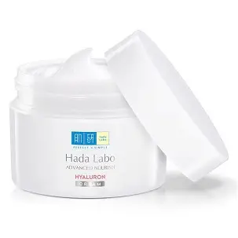

235.000đ
Thương hiệu: Hada Labo (Nhật Bản)
Loại da phù hợp: Mọi loại da, đặc biệt da khô và da thiếu nước.
Hada Labo Advanced Nourish Cream là dòng kem dưỡng ẩm quốc dân đến từ tập đoàn Rohto Nhật Bản. Sản phẩm nổi bật với hệ dưỡng ẩm sâu HA (Hyaluronic Acid) đột phá, giúp cung cấp và khóa độ ẩm tối ưu, khắc phục tình trạng da khô sạm do thiếu nước.
Chất kem cô đặc nhưng lại tan nhanh trên da, không để lại màng nhờn rít khó chịu. Đặc biệt, công thức của Hada Labo tuân thủ nguyên tắc "Trọn vẹn hoàn hảo", hoàn toàn không chứa cồn, không hương liệu, không chất tạo màu, vô cùng an toàn và lành tính ngay cả với những làn da nhạy cảm nhất.